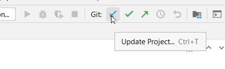

Als je die nog niet open had staan: open je Java project met git repository van de vorige instructie in IntelliJ.
Je maakt eerst repository op gitlab om in samen te werken.
Je krijgt nu een pagina te zien van het lege project met wat commandline instructies. Je hebt nu de git URL van het project nodig. Klik hiervoor op de "Clone" knop en klik op het "Copy URL" knopje bij "Clone with HTTPS":
Ga terug naar je project in IntelliJ. Hier gaan we nu je lokale git commits pushen naar de remote repository op gitlab.
Als je nu naar je gitlab repository gaat, dan zie je daar je laatste code staan bij Repository > File. Bij Repository > Commits zie je al je commits.
Je kunt nu bij "Members" andere mensen uitnodigen in jouw repository. Klik op "Members", zoek de persoon die je wilt uitnodigen, en maak die persoon Developer. Druk op "Invite" om de invite te versturen.
Als je in het project van iemand anders wilt werken, dan heb je de gitlab URL nodig, zoals je die vindt onder de "Clone" knop bij "Clone with HTTPS". Kopieer deze url (die eindigt met .git)
Maak een nieuwe project in IntelliJ:
Je krijgt nu de repository naar je eigen PC gekopieerd met alle commits van de ander.
Je kunt nu committen zoals je ook met een eigen project kunt.
Druk op de knop "Update project" (pull) om de wijzigingen van anderen bij jou naar binnen te halen. Dit kun je het beste altijd doen voordat je pusht.

Als er conflicten zijn met wijzigingen die je zelf hebt gedaan, dan krijg je per bestand de keuze of je
Als je conflicten hebt opgelost (gemerged), dan moet je daarna nog een keer deze merge committen, want het zijn uiteindelijk toch weer wijzigingen.
Als er geen conflicten (meer) zijn, druk dan op de knop "push" om je eigen commits naar gitlab te publiceren.